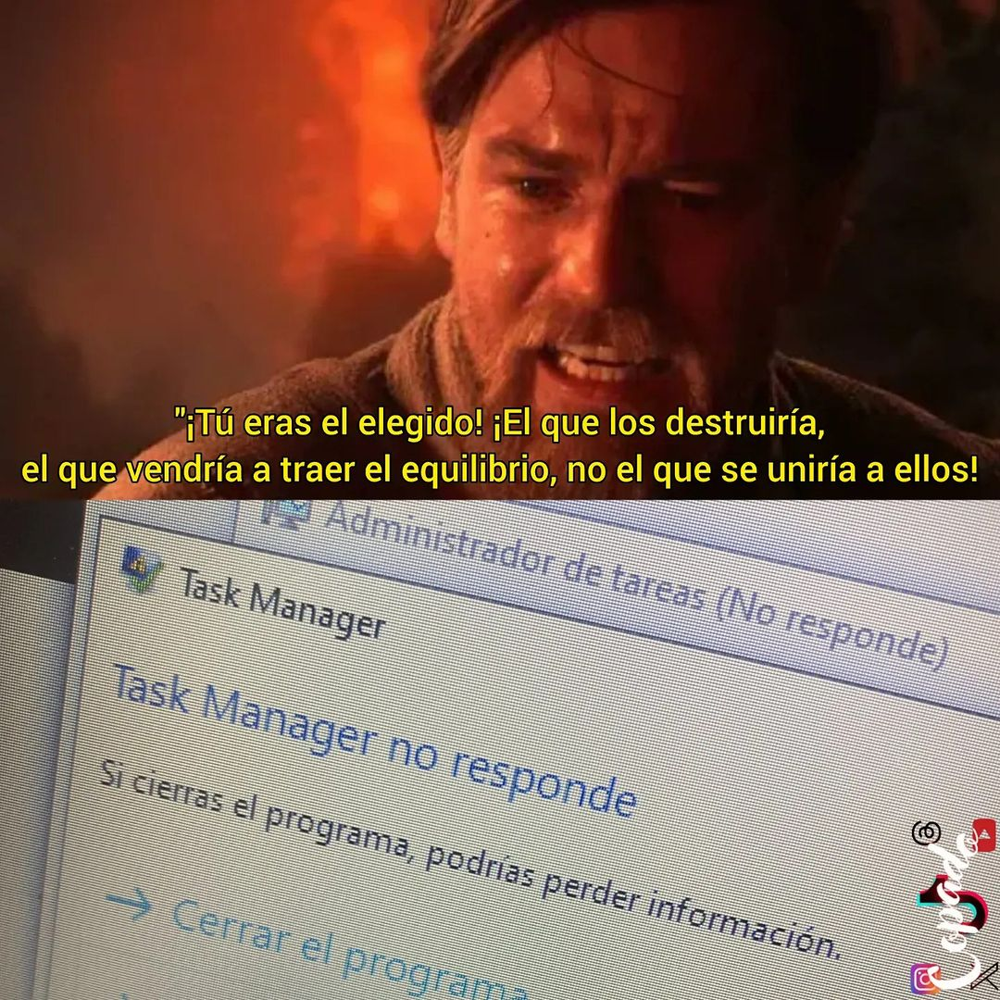

HTML tiene dos etiquetas para indicar la entrada y salida de datos:
<p>Para abrir el administrador de tareas en Windows presione <kbd>CTRL</kbd>+<kbd>ALT</kbd>+<kbd>SUP</kbd></p>
<p>El administrador de tareas devolvió el mensaje: <samp>No se ha podido finalizar la tarea</samp></p>
Para abrir el administrador de tareas en Windows presione CTRL+ALT+SUP
El administrador de tareas devolvió el mensaje: No se ha podido finalizar la tarea
Y como siempre podemos modificar el CSS para darle forma de teclas, cambiar colores, etc.
Para abrir el administrador de tareas en Windows presione CTRL+ALT+SUP
El administrador de tareas devolvió el mensaje: El administrador de tareas no responde
